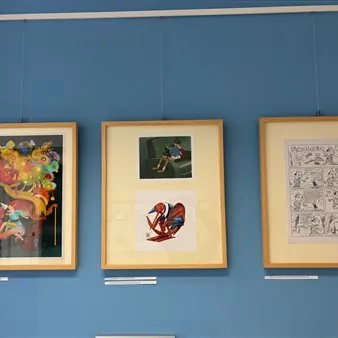

da ven 20 nov a dom 10 gen
“Carissimo Pinocchio – Selected Italian Comics and Art”
Curata da Paola Bristot e realizzata con la collaborazione di Cinemazero, la mostra celebra i duecento anni dalla nascita di Carlo Collodi attraverso illustrazione, fumetto e animazione. Dopo la presentazione in Ungheria dal 14 al 17 ottobre, sarà esposta a San Vito al…
 Indicazioni
Indicazioni
- Costi e prenotazioni
- Costo non indicato · Prenotazione non indicata
- Programma
- Programma da verificare. Apri la fonte ufficiale per orari e possibili aggiornamenti.
- In caso di maltempo
- Nessuna indicazione specifica pubblicata.
- Note
- Acquisito automaticamente dalla fonte.
L’EVENTO
Descrizione completa
Curata da Paola Bristot e realizzata con la collaborazione di Cinemazero, la mostra celebra i duecento anni dalla nascita di Carlo Collodi attraverso illustrazione, fumetto e animazione.
Dopo la presentazione in Ungheria dal 14 al 17 ottobre, sarà esposta a San Vito al Tagliamento dal 15 novembre 2026 al 10 gennaio 2027.
Nel bicentenario della nascita di Carlo Collodi (1826-1890) , la mostra rende omaggio a un personaggio che continua ad attraversare epoche, linguaggi e generazioni. Fin dalle illustrazioni di Enrico Mazzanti per la prima edizione in volume del 1883, le avventure del burattino hanno sprigionato un potenziale immaginativo straordinario, alimentando una lunga storia di interpretazioni tra libri illustrati, fumetti e cinema d’animazione.
Il progetto riunisce Franco Matticchio, Glenda Sburelin, Igort, Giorgio Carpinteri, Davide Toffolo, Anna Dietzel, Maicol&Mirco, Marco Corona, Luca Salvagno, Massimo Giacon, Riccardo De Biasi, Stefano Zattera, Lorenzo Mattotti, Roberto Catani e Gianluigi Toccafondo . Maestri riconosciuti e nuove voci restituiscono, attraverso tecniche e sensibilità differenti, la vitalità di un protagonista capace di parlare anche agli adulti.
Al centro del percorso c’è il Pinocchio avventuroso, curioso e irrequieto, che si lascia trascinare verso incontri sorprendenti, tranelli e metamorfosi. Un personaggio la cui forza risiede anche nella libertà di essere imperfetto: prima ancora del bambino del finale, è il burattino a custodire quell’energia fantastica che gli artisti continuano a reinventare.
Le opere aprono così a letture inattese. Franco Matticchio gioca con la capacità del racconto di trasformare anche chi lo legge; Gianluigi Toccafondo restituisce al personaggio una vita poetica attraverso le immagini dell’animazione. Il percorso comprende inoltre il lavoro di Lorenzo Mattotti , autore delle scenografie e dei personaggi del film di Enzo D’Alò, e i fotogrammi di “Il burattino e la balena” di Roberto Catani , raccolti nella pubblicazione di Withstand del 2026.
Nel fumetto, Pinocchio incontra altri immaginari: diventa “Pinocchio Maltese” con Luca Salvagno , mentre Maicol&Mirco capovolgono la trasformazione finale, facendo diventare il bambino un burattino di legno. Massimo Giacon lo porta nel contemporaneo con le tavole apparse su “Linus”; Igort ne propone una versione dall’eleganza inconfondibile e Davide Toffolo ne coglie la poesia attraverso un segno essenziale. Stefano Zattera lo rilegge con suggestioni che richiamano Ranxerox e Zanardi, mentre Riccardo De Biasi lo trasforma nel suo “Pi-Nokia”. Non mancano gli altri protagonisti del racconto, dal Gatto e la Volpe di Anna Dietzel e Glenda Sburelin a Mastro Ciliegia interpretato da Giorgio Carpinteri .
Dopo l’anteprima ungherese, la mostra sarà aperta dal 15 novembre 2026 alla Chiesa di San Lorenzo, PFA HUB, in via Amalteo a San Vito al Tagliamento , con inaugurazione venerdì 20 novembre , nei giorni clou del Piccolo Festival dell’Animazione che quest'anno si terrà dal 14 al 22 novembre . Accanto ai disegni degli artisti, cui si aggiungono Roberto Catani, Beatrice Pucci, Guido Scarabottolo e una Pinocchia di legno di Ugo Furlan , saranno esposti libri ed edizioni illustrate di Roberto Innocenti, Luciano Bottaro, Benito Jacovitti , il fumetto di Osamu Tezuka e altri volumi che testimoniano la fortuna visiva del personaggio.
Venerdì 20 novembre è in programma anche la proiezione di “Le avventure di Pinocchio” (1911) di Giulio Antamoro , il primo lungometraggio italiano dedicato al burattino: un’opera del cinema muto proposta con la sonorizzazione elaborata da Enrico Sist .
La mostra resterà visitabile fino al 10 gennaio 2027 , dal venerdì alla domenica, dalle 10 alle 12 e dalle 15 alle 19, a ingresso gratuito .
IL PROGRAMMA
Programma e orari
Appuntamenti raccolti dalle fonti elencate. Dove manca un orario, non è ancora disponibile in questa scheda.
Programma pubblicato
- Dal 2026-11-20 al 2027-01-10
INFORMAZIONI UTILI
Prima di partire
- Controllare la fonte prima di partire.
ORGANIZZAZIONE